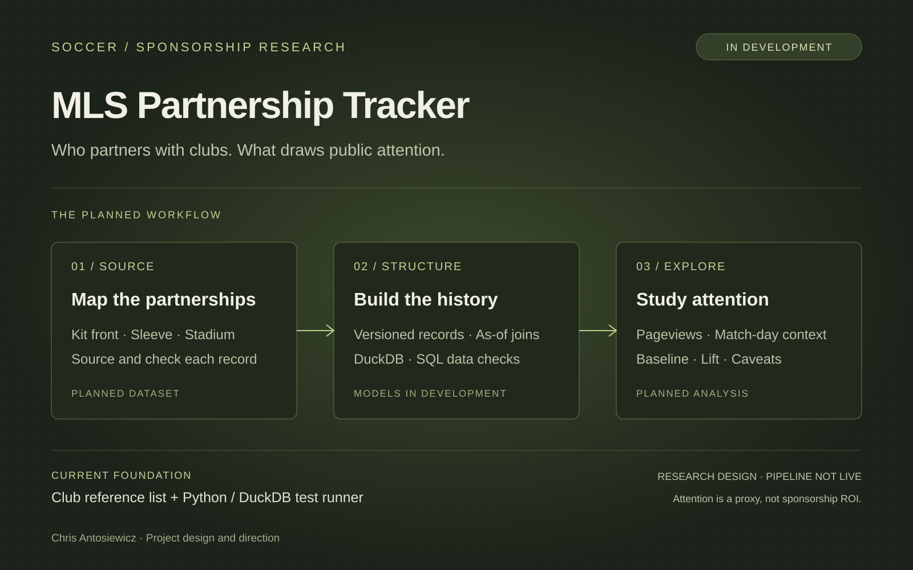

MLS / IN PROGRESS / UPDATED OCTOBER 2026
MLS Partnership Tracker
A sourced view of club partnerships and public attention.

Overview
Which product categories sponsor MLS clubs, and how does public attention to clubs and sponsor brands change around matches and new deals? This project aims to build a sourced, versioned view of major partnerships as a starting point for partnership research. Public attention is a proxy for interest, not a measure of sponsor value.
The initial scope covers front-of-kit, sleeve, and stadium naming partnerships. So far there is a club reference table, a project scaffold and a Python/DuckDB test runner. Sponsor research and the wider pipeline are in development.
Planned work includes source URLs and check dates for partnership records, historical partnership versions for as-of joins, Wikimedia pageview ingestion, MLS schedule ingestion, a trailing attention baseline, match-day lift, and a Quarto page rebuilt with GitHub Actions. There are no supported findings or real chart exports yet.
Findings
- No findings yet. Sponsor records and pageview data have not been collected, and charts made from synthetic test data are left out on purpose.
Limitations and what’s left
- Wikipedia pageviews measure public attention, not sponsorship value, attribution, or return on investment.
- The initial scope covers kit-front, sleeve, and stadium naming partners rather than complete partner lists. Deal values will be labeled reported and included only when a source states them.
- Club Wikipedia article titles remain unverified; redirects may affect view counts.
- Sponsor data, ingestion, SQL models, daily workflows, charts, and a live page remain unfinished or unverified. A daily pipeline is planned, not operating.
- Planned analyses are described in the project brief; there is no formal public pre-registration.